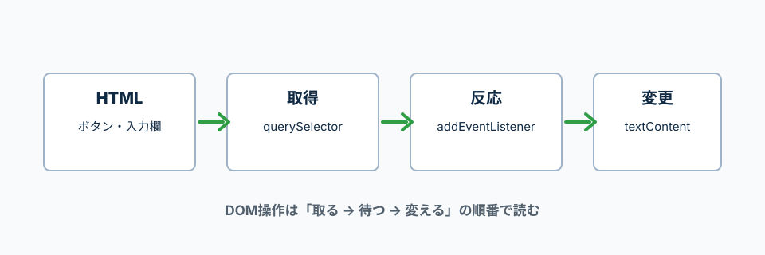

HTMLの要素を取得して、クリックや入力に反応させる基本。
querySelectorはCSSセレクタに一致する最初の要素を返す。見つからない場合はnullになる。
addEventListenerは、クリックなどのイベントに処理を登録する。
DOM操作は、HTML要素を取得して、イベントを登録して、画面を変更する流れ。
コードを読む時は「どの要素を取ったか」「いつ動くか」「何を変えるか」を見る。

addEventListenerに渡した関数は、クリックや入力などのイベントが起きた時にブラウザが呼ぶ。
その時、ブラウザがイベント情報を引数として渡す。よく e という名前で受け取る。
const button = document.querySelector('.js-button');
button.addEventListener('click', (e) => {
console.log(e.target);
});
(e) => { ... }
eは自分で呼んで渡しているのではなく、ブラウザがイベント情報として渡してくれる。
e.target
イベントが起きたHTML要素。ここではクリックされたボタン。
JavaScriptから触りたい要素には、classやidを付ける。
ここではボタンと表示エリアを用意する。
<button class="js-button" type="button">クリック</button>
<p class="js-message">ここに表示されます</p>
document.querySelectorでHTML要素を取得する。
.js-buttonは、class名がjs-buttonの要素という意味。
const button = document.querySelector('.js-button');
const message = document.querySelector('.js-message');
console.log(button);
console.log(message);
document
今開いているHTML全体を表す。
querySelector('.js-button')
class名がjs-buttonの要素を1つ取得する。
const button
取得したボタン要素にbuttonという名前を付けている。
addEventListenerで、クリックされた時の処理を登録する。
textContentは、要素の中の文字を変更する。
const button = document.querySelector('.js-button');
const message = document.querySelector('.js-message');
button.addEventListener('click', () => {
message.textContent = 'クリックされました';
});
addEventListener('click', ...)
クリックされた時に動く処理を登録する。
() => { ... }
クリックされた時に実行する関数。
message.textContent
message要素の中の文字を変更する。
inputのvalueで入力された文字を取得する。
formのsubmitでは、e.preventDefault()で画面の再読み込みを止める。
HTML
<form class="js-form">
<input class="js-input" type="text">
<button type="submit">送信</button>
</form>
<p class="js-result"></p>
JavaScript
const form = document.querySelector('.js-form');
const input = document.querySelector('.js-input');
const result = document.querySelector('.js-result');
form.addEventListener('submit', (e) => {
e.preventDefault();
result.textContent = input.value;
input.value = '';
});
submit
フォームが送信された時に発生するイベント。
e.preventDefault()
フォーム送信時の画面再読み込みを止める。eはブラウザが渡したイベント情報。
input.value
入力欄に入っている文字を取得する。
classList.addでclassを追加、classList.removeで削除、classList.toggleで付け外しを切り替える。
メニューの開閉やエラー表示でよく使う。
const button = document.querySelector('.js-button');
const box = document.querySelector('.js-box');
button.addEventListener('click', () => {
box.classList.toggle('is-active');
});
classList
HTML要素についているclassを操作するためのもの。
toggle('is-active')
is-activeがなければ追加し、あれば外す。
data-idのような属性は、JavaScriptからdatasetで読める。
削除ボタンにTodoのidを持たせる時に便利。
HTML
<button class="js-delete" type="button" data-id="10">
削除
</button>
JavaScript
const deleteButton = document.querySelector('.js-delete');
deleteButton.addEventListener('click', () => {
const id = deleteButton.dataset.id;
console.log(id);
});
querySelectorは、見つからない時にnullを返す。
nullのままaddEventListenerを呼ぶとエラーになるので、先に確認する。
const button = document.querySelector('.js-button');
if (button !== null) {
button.addEventListener('click', () => {
console.log('クリックされました');
});
}
button !== null
buttonが見つかっているか確認している。!==は「同じではない」という意味。